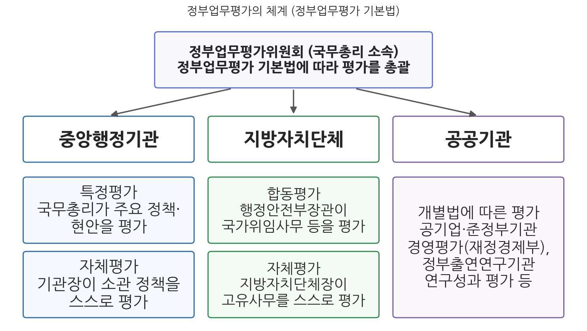
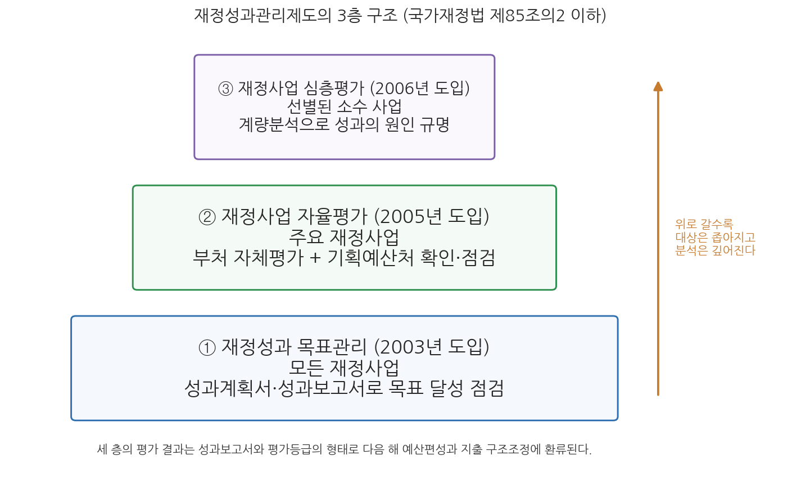

14주차 2차시. 재정평가론: 재정성과관리와 정부업무평가
최종 수정: 2026-08-13 · 이 교재는 학기 중에도 계속 업데이트됩니다
이 법은 정부업무평가에 관한 기본적인 사항을 정함으로써 중앙행정기관·지방자치단체·공공기관 등의 통합적인 성과관리체제의 구축과 자율적인 평가역량의 강화를 통하여 국정운영의 능률성·효과성 및 책임성을 향상시키는 것을 목적으로 한다. (정부업무평가 기본법 제1조)
이 장에서 배우는 것
2026년 3월 30일, 기획예산처는 '2027년도 예산안 편성 및 기금운용계획안 작성지침'을 국무회의에서 확정했다. 이 지침은 제도 도입 이후 처음으로 지출구조조정의 기준을 공개하면서, 각 부처에 재량지출의 15%, 의무지출의 10%를 감축하는 목표를 제시했다. 여기서 실무적인 질문 하나가 나온다. 한 부처가 수백 개의 사업을 운영하는데, 어느 사업을 지키고 어느 사업을 줄여야 하는가. 사업 담당자의 항변은 어느 사업이든 비슷하다. 모두 필요하고, 모두 성과가 있다고 한다. 이 항변들을 가려내려면 사업이 실제로 무엇을 달성했는지에 관한 체계적인 정보, 곧 평가가 필요하다. 지출구조조정이라는 칼은 평가라는 저울 없이는 휘두를 수 없는 것이다.
이 장은 그 저울의 구조를 배우는 시간이다. 앞 차시(14주차 1차시)의 예비타당성조사(예타)가 돈을 쓰기 전에 사업을 거르는 사전 관문이었다면, 이번 차시는 돈을 쓰는 중에, 그리고 쓰고 난 뒤에 성과를 따지는 사후 평가의 세계다. 한국의 평가제도는 정부업무평가 기본법에 따른 정부업무평가와 국가재정법에 따른 재정성과관리의 두 축으로 이루어져 있다. 이 장에서는 두 축의 구조를 차례로 보고, 재정성과관리를 이루는 세 층(성과목표관리·재정사업자율평가·심층평가)을 뜯어본 뒤, 제도의 과제를 따진다. 그리고 이 장이 이 교재의 마지막 장이므로, 끝에서 1주차의 첫 질문으로 돌아가 13주의 여정을 마무리한다. 구체적으로 다음을 배운다.
- 사업분석과 사업평가의 구분: 사전적 분석과 사후적 검토
- 정부업무평가제도의 구조: 정부업무평가위원회, 자체평가와 특정평가, 합동평가
- 재정성과관리의 법적 근거: 2021년 국가재정법 개정과 제85조의2 이하의 체계
- 성과목표관리·재정사업자율평가·심층평가의 3층 구조와 각각의 작동 방식
- 성과관리의 함정: 지표의 왜곡, 평가의 형식화, 평가와 예산 연계의 한계
이 장은 하나의 질문을 따라 전개된다. "정부는 돈을 쓴 결과를 어떻게 확인하고, 그 확인을 다음 예산에 어떻게 반영하는가?"
2.1 정부업무평가제도의 구조(자체평가·특정평가·합동평가)를 정리한다 → 2.2 재정성과관리제도의 개념과 법적 근거(국가재정법 제85조의2 이하)를 확인한다 → 2.3 성과목표관리·재정사업자율평가·심층평가의 3층 구조를 뜯어본다 → 2.4 재정성과관리의 과제를 따진다 → 2.5 1주차의 질문으로 돌아가 강의 전체를 마무리한다.
2.1 정부업무평가제도
사업분석과 사업평가: 쓰기 전의 계산과 쓴 뒤의 확인
재정사업에 대한 검토는 시점에 따라 둘로 나뉜다. 사업분석(program analysis)은 예산을 편성하기 위해 어떤 사업을 추진할 것인지를 사전에 따지는 조망적 분석(anticipatory analysis)이고, 사업평가(program evaluation)는 사업 결정이 이루어지고 난 후 집행 과정과 결과를 검토하는 회고적 검토(retrospective examination)다. 13주차의 비용편익분석과 앞 차시의 예비타당성조사가 전자의 도구라면, 이 장에서 다루는 재정성과관리와 정부업무평가는 후자의 제도다. 둘은 대칭이 아니라 순환의 관계에 있다. 사전 분석이 약속한 편익이 실제로 실현되었는지는 사후 평가만이 확인할 수 있고, 사후 평가가 축적한 정보는 다음번 사전 분석과 예산편성의 재료가 된다. 10주차에서 본 예산주기의 언어로 말하면, 평가는 결산과 함께 한 회계연도의 순환을 닫으면서 다음 순환을 여는 고리다.
한국의 사후 평가는 두 개의 법률, 두 개의 제도로 짜여 있다. 하나는 2006년 시행된 정부업무평가 기본법에 따른 정부업무평가로, 재정사업만이 아니라 정부의 정책 전반을 대상으로 한다. 다른 하나는 국가재정법에 따른 재정성과관리로, 예산과 기금이 투입되는 재정사업의 성과를 다룬다. 전자가 국정 운영 전반의 성과를 묻는 넓은 틀이라면, 후자는 돈의 성과를 묻는 좁고 깊은 틀이다. 먼저 넓은 틀부터 본다.
정부업무평가의 구조: 자체평가, 특정평가, 합동평가
정부업무평가제도는 국정운영의 능률성·효과성·책임성을 확보하기 위하여 중앙행정기관, 지방자치단체, 그 소속기관, 공공기관이 행하는 정책 등을 평가하는 제도다. 2006년 3월 정부업무평가 기본법이 제정되어(법률 제7928호, 같은 해 4월 1일 시행) 기관마다 제각각이던 평가들을 하나의 기본 틀로 통합했고, 평가의 총괄을 위해 국무총리 소속으로 정부업무평가위원회를 두었다. 제도의 뼈대는 평가의 주체가 누구인가에 따라 갈린다. 법의 정의 조문을 직접 읽어 보자.
"... '자체평가'라 함은 중앙행정기관 또는 지방자치단체가 소관 정책등을 스스로 평가하는 것을 말한다.
'특정평가'라 함은 국무총리가 중앙행정기관을 대상으로 국정을 통합적으로 관리하기 위하여 필요한 정책등을 평가하는 것을 말한다."
무슨 뜻인가. 평가의 기본값은 자기 평가라는 뜻이다. 중앙행정기관의 장은 소속기관의 정책을 포함하여 자체평가를 실시하여야 하고(제14조), 매년 기관의 임무와 전략목표·성과목표, 평가 대상과 방법, 결과 활용을 담은 자체평가 계획을 세워 기관 임무에 필수적인 정책과 그 해의 성과목표 달성에 관련된 정책 등을 스스로 평가한다. 그러나 자기 평가만으로는 부처 이기주의와 온정주의를 거르기 어렵고, 여러 부처에 걸친 국정과제는 개별 부처의 시야에 잡히지 않는다. 그래서 국무총리가 2 이상의 중앙행정기관 관련 시책, 주요 현안시책, 혁신관리 등 국정을 통합적으로 관리하기 위해 필요한 부문을 직접 평가하는 특정평가가 자체평가 위에 얹혀 있다(제20조). 정부업무평가위원회는 최근 운영에서 기관 간 협업의 노력과 성과를 중점 평가해 부처 칸막이 해소를 유도하고, 특정평가에서 기관 종합등급 없이 부문별 결과만 공개해 지나친 기관 서열화를 피하며, 평가 간 유사·중복을 점검해 피평가기관의 부담을 줄이는 방향을 밝혀 왔다.
지방자치단체와 공공기관의 평가는 별도의 트랙으로 운영된다. 지방자치단체는 고유사무 전반을 단체장 책임하에 자체평가하되, 국가위임사무와 국고보조사업 등에 대해서는 행정안전부장관이 관계 중앙행정기관의 장과 합동으로 평가하는 합동평가가 실시된다(제21조). 공공기관 평가는 개별 법률에 따라 이루어지는데, 대표적인 것이 공공기관의 운영에 관한 법률에 따른 공기업·준정부기관 경영평가다. 공공기관 관리는 2026년 정부조직 개편 이후 재정경제부 소관이 되었고, 재정경제부의 공공기관운영위원회는 2026년 342개 기관을 공공기관으로 지정했다. 그림 14-3이 이 전체 구조다.

그림 14-3을 읽는 법은 이렇다. 맨 위의 정부업무평가위원회(국무총리 소속)가 정부업무평가 기본법에 따라 평가 전체를 총괄하고, 그 아래 세 기둥이 평가대상 기관군이다. 중앙행정기관은 자체평가와 특정평가의 이중 구조로, 지방자치단체는 자체평가와 합동평가의 이중 구조로, 공공기관은 개별법에 따른 평가로 관리된다. 이 그림에서 알 수 있는 것은 한국 평가제도의 설계 원리가 "스스로 평가하되, 그 위에 통합 관리자의 평가를 겹친다"는 이중화라는 점이다. 자율과 통제의 균형이라는 행정학의 오랜 주제가 평가제도의 구조에 그대로 새겨져 있는 것이다.
2.2 재정성과관리제도의 체계
개념: 투입-통제에서 성과-평가로
재정성과관리는 성과를 중심으로 재정을 운용하고 그 결과를 평가해 다음 예산편성에 환류시키는 관리방법을 뜻하며, 재정배분의 효율성 제고와 책임성 확보를 목표로 한다. 성과 중심의 재정체계는 재정운용 조직의 자율성과 책임성을 함께 강화하며, 사전적 통제보다 성과평가에 근거한 사후적 평가에 초점을 둔다. 13주차 1차시에서 본 예산제도 개혁의 역사를 떠올려 보자. 품목별 예산제도가 투입의 통제에, 성과주의 예산제도가 산출의 측정에 초점을 두었다면, 재정성과관리는 그 계보의 현대적 형태로서 재정 운용의 패러다임을 "투입-통제"에서 "성과-평가"로 옮기려는 시도다. 돈을 규정대로 썼는가만 묻는 것이 아니라, 돈이 약속한 성과를 냈는가를 묻고 그 답을 다음 배분에 반영하겠다는 것이다.
재정성과관리(performance management of fiscal programs)는 재정사업에 대한 성과목표·성과지표의 설정과 그 달성 과정·결과의 관리(성과목표관리), 그리고 재정사업의 계획 수립·집행과정·결과에 대한 점검·분석·평가(성과평가)를 내용으로 하는 관리체계를 뜻한다(국가재정법 제85조의2). 성과계획서와 성과보고서로 목표 달성을 관리하고, 자율평가와 심층평가로 사업의 성과를 평가하며, 그 결과를 예산편성과 지출 구조조정에 환류하는 것이 골격이다.
법적 근거: 2021년 국가재정법 개정, 제85조의2 이하
재정성과관리의 법적 근거는 국가재정법이다. 2006년 제정된 국가재정법(2007년 시행)은 성과 중심의 재정운용 원칙과 성과계획서·성과보고서 제출을 규정해 제도의 출발점을 놓았고, 2021년 12월 21일 개정(법률 제18585호)은 흩어져 있던 규정을 "재정사업 성과관리"라는 독립된 장(제85조의2부터 제85조의12까지)으로 체계화했다. 이 개정으로 성과관리의 내용이 성과목표관리와 성과평가로 구체화되었고, 재정사업 성과관리 기본계획의 수립, 성과관리 추진체계, 성과정보의 관리·공개 근거가 마련되었다. 핵심 조문을 읽어 보자.
"① 정부는 성과중심의 재정운용을 위하여 다음 각 호의 성과목표관리 및 성과평가를 내용으로 하는 재정사업의 성과관리(이하 '재정사업 성과관리'라 한다)를 시행한다.
1. 성과목표관리: 재정사업에 대한 성과목표, 성과지표 등의 설정 및 그 달성을 위한 집행과정ㆍ결과의 관리
2. 성과평가: 재정사업의 계획 수립, 집행과정 및 결과 등에 대한 점검ㆍ분석ㆍ평가"
무슨 뜻인가. 재정성과관리가 두 개의 기둥으로 정의되어 있다는 뜻이다. 하나는 모든 재정사업에 목표와 지표를 달아 달성 여부를 관리하는 성과목표관리이고, 다른 하나는 사업을 골라 점검·분석·평가하는 성과평가다. 뒤에서 볼 3층 구조 중 첫째 층이 앞의 기둥에, 둘째·셋째 층이 뒤의 기둥에 해당한다. 절차 조문들도 주체를 분명히 한다. 각 중앙관서의 장과 기금관리주체는 매년 성과목표·성과지표가 포함된 성과계획서와 성과보고서를 작성하여야 하고(제85조의6), 예산요구서를 제출할 때 다음 연도의 성과계획서와 전년도의 성과보고서를 함께 제출하여야 하며(제85조의7), 기획예산처장관은 재정사업에 대한 성과평가를 실시할 수 있다(제85조의8). 성과계획서는 예산안의 첨부서류로 국회에 제출되고, 성과보고서는 국가회계법에 따른 결산보고서에 담겨 국회에 제출된다. 2026년 정부조직 개편 이후의 소관을 정리하면, 예산·기금의 성과관리는 정부조직법상 기획예산처의 관장 사무이므로 성과관리 제도의 총괄과 성과평가는 기획예산처가 맡고, 성과보고서가 실려 가는 국가결산보고서의 작성·제출은 재정경제부장관의 소관이다(국가재정법 제58-61조).
재정사업 성과관리의 법제화는 별도의 "재정성과법" 제정이 아니라 2021년 12월 21일 국가재정법 개정(법률 제18585호)으로 이루어졌다. 성과관리를 규정한 독립 법률이 새로 만들어진 것이 아니라, 국가재정법 안에 재정사업 성과관리의 장(제85조의2 이하)이 신설된 것이다. 보고서나 답안에서 법적 근거를 물을 때는 "국가재정법(2021년 개정으로 체계화)"이라고 쓰는 것이 정확하다. 정부업무평가의 근거인 정부업무평가 기본법(2006년 제정)과도 혼동하지 않도록 주의해야 한다.
성과계획서의 구조: 임무에서 지표까지
성과목표관리의 실무는 성과계획서라는 문서에 담긴다. 성과계획서는 중앙관서와 기금관리주체가 전략목표와 성과목표를 달성하기 위해 세우는 연도별 시행계획으로, 기관의 임무·비전에서 출발해 전략목표, 프로그램 목표, 단위사업으로 내려오는 목표의 계층과 각 층위를 측정할 성과지표·목표치로 구성된다. 임무는 기관의 존재 이유와 주요 기능을, 비전은 임무 달성을 통해 이루려는 미래상을 담고, 전략목표는 국정목표와 기관의 임무·비전을 감안해 기관이 중점 추진할 정책방향을 제시한다. 프로그램 목표는 전략목표와 단위사업 사이의 연계를 확보해야 하고, 단위사업은 예산 과목체계상의 단위사업과 일치시킨다. 여기서 5주차 2차시에서 배운 프로그램 예산제도를 떠올릴 필요가 있다. 성과계획서의 목표 체계가 프로그램-단위사업이라는 예산구조와 같은 뼈대를 쓰도록 설계되어 있기 때문에, 돈의 구조와 목표의 구조가 서로 대응하고, 그래서 "이 프로그램에 얼마가 들어가 어떤 성과가 났는가"를 연결해 물을 수 있는 것이다. 성과지표는 목표 달성 여부를 재는 도구로서 가능한 한 정량적으로, 사업의 궁극적 효과를 재는 결과지표 위주로 설정하되 결과 측정이 어려우면 과정·산출지표를 병행하며, 목표치는 과거 추세와 유사 사업, 국제 수준을 고려해 도전적으로 설정하도록 요구된다. 이 요구가 실제로는 어떻게 비틀리는지가 2.4절의 주제다.
2.3 성과목표관리·재정사업자율평가·심층평가: 3층 구조
재정성과관리는 세 개의 층으로 운영된다. 그림 14-4가 전체 구조다.

그림 14-4를 읽는 법은 이렇다. 아래층일수록 대상이 넓고 분석이 얕으며, 위층일수록 대상이 좁고 분석이 깊다. 맨 아래의 성과목표관리는 모든 재정사업에 지표를 달아 상시 모니터링하고, 가운데의 재정사업자율평가는 주요 사업을 매년 평가해 등급을 매기며, 맨 위의 심층평가는 문제가 있거나 중요한 소수 사업을 골라 원인까지 파고든다. 이 그림에서 알 수 있는 것은 세 층이 선별의 깔때기로 연결되어 있다는 점이다. 목표관리가 이상 신호를 보내면 자율평가가 등급으로 판정하고, 자율평가가 가려낸 문제 사업은 심층평가의 후보가 된다. 세 층의 결과는 모두 성과보고서와 평가등급의 형태로 다음 해 예산편성과 지출 구조조정에 환류된다.
첫째 층인 재정성과 목표관리는 2003년 시범 도입되어 2006년 모든 부처로 확대되었다. 앞 절에서 본 성과계획서와 성과보고서의 작성·제출을 중심으로 운영되며, 설정된 성과목표와 성과지표의 달성 여부를 모니터링한다. 전수를 포괄하는 대신 판정은 가볍다. 지표가 달성되었는지를 확인할 뿐, 사업 자체가 좋은 사업인지는 묻지 않는다.
둘째 층인 재정사업 자율평가는 미국 부시 행정부의 사업평가도구인 PART(Program Assessment Rating Tool)를 참고해 2005년 도입되었다. 원칙적으로 예산·기금이 투입되는 모든 재정사업을 대상으로 하되 단위사업을 기준으로 하며, 평가 중복을 피하기 위해 별도 평가체계가 있는 연구개발·재난안전 등의 사업은 제외한다. 이름에 담긴 대로 평가의 주체는 사업을 수행하는 부처 자신이다. 사업수행 부처는 자체평가위원회를 구성해 소관 재정사업을 평가하고, 결과를 평가지표별 점수를 종합해 우수·보통·미흡의 3단계로 등급화한다. 다만 자기 평가의 관대화를 막기 위한 장치가 겹겹이 붙어 있다. 대상사업이 10개 이상인 부처는 우수 20% 이하, 보통 65% 내외, 미흡 15% 이상의 상대평가 비율을 지켜야 하고, 미흡 등급을 받은 사업에는 환류계획 수립과 지출 구조조정이 요구되며, 기획예산처가 부처 평가 결과에 대해 보통·미흡 사업을 중심으로 확인·점검을 실시한다. 부처의 자율과 예산당국의 사후 점검을 결합한 이 구조는, 11주차에서 본 소비자(부처)와 수문장(중앙예산기관)의 관계가 평가제도 안에서 재현된 모습이기도 하다.
셋째 층인 재정사업 심층평가는 2006년 도입되었으며, 자율평가와 세 가지가 다르다. 주체가 부처가 아니라 기획예산처장관이고(국가재정법 제85조의8의 성과평가 권한), 대상이 전수가 아니라 선별된 소수이며, 방법이 체크리스트가 아니라 계량분석 등 과학적 기법이다. 심층평가의 대상은 자율평가 결과 추가 검증이 필요하다고 판단되는 사업, 부처 간 유사·중복이 있거나 예산 낭비의 소지가 있는 사업, 향후 재정지출이 급증할 것으로 예상되어 지출 효율화가 필요한 사업 등이며, 평가는 정부 개입의 적절성 분석, 성과지표와 평가모형에 따른 효과성 분석, 집행체계와 인과구조를 따지는 집행성과 분석으로 구성된다. 사업의 추진 내용과 성과 사이의 인과관계를 밝혀 성공과 실패의 원인을 규명하고 사업 운용체계의 개선안을 도출하는 것이 목적이라는 점에서, 심층평가는 세 층 가운데 유일하게 "왜"를 묻는 층이다.
세 층 외에 보완 장치들이 있다. 국고보조사업에 대해서는 2015년 운용평가가 도입된 뒤 2016년부터 3년 일몰제와 결합한 연장평가가 시행되어, 존속 기간이 끝나 가는 보조사업의 타당성과 관리 적정성을 3년마다 평가하고 그 결과를 정상 추진부터 즉시 폐지까지 6개 유형으로 분류해 다음 연도 예산안과 함께 국회에 제출한다. 또한 2021년 법 개정 이후 정부는 주요 재정사업을 핵심 재정사업으로 선정해 성과관리 정보를 재정정보 공개 시스템인 열린재정에 공개하고 있어, 성과정보가 행정부 내부의 관리 도구를 넘어 국민에 대한 보고 수단으로 확장되는 중이다.
2.4 재정성과관리의 과제
성과관리의 이상은 명료하다. 성과를 재서 좋은 사업에 돈을 더 주고 나쁜 사업에서 돈을 빼는 것이다. 그러나 30년 가까운 각국의 경험은 이 이상과 실제 사이에 구조적인 간극이 있음을 보여 준다(van Thiel & Leeuw, 2002). 한국의 재정성과관리가 안고 있는 과제를 네 가지로 정리한다.
첫째, 지표의 왜곡이다. 측정이 통제의 수단이 되는 순간 측정 대상은 지표에 맞추어 행동을 바꾼다(Campbell, 1979). 부처는 달성하기 쉬운 지표를 고르고, 목표치는 "겉보기에 도전적"으로 보이되 실제로는 무난히 달성되도록 설정하며, 사업의 궁극적 효과 대신 측정하기 쉬운 산출을 지표로 삼는 유인을 갖는다. 성과보고서의 지표 달성률이 해마다 높게 나오는데도 국민이 체감하는 사업 효과는 그만 못한 현상, 곧 성과의 역설이 나타나는 이유다. 결과지표 위주 설정이라는 지침의 요구와 달성 가능한 지표를 향한 부처의 유인 사이의 줄다리기는 제도가 존재하는 한 계속된다.
둘째, 평가의 형식화다. 자율평가는 부처의 자기 평가를 기본으로 하므로 관대화의 압력을 구조적으로 받는다. 상대평가 비율 강제는 이 압력에 대한 응답이지만, 거꾸로 등급 비율을 맞추기 위한 기계적 배분이라는 부작용을 낳을 수 있다. 평가서 작성이 연례 서류 작업으로 굳어지면, 평가는 학습의 도구가 아니라 통과의례가 된다. 정부업무평가와 재정성과관리가 별도 법률, 별도 주관으로 운영되는 이원 구조도 피평가 기관에는 부담의 중복으로 다가온다. 하나의 사업이 자체평가, 자율평가, 특정평가의 대상에 겹쳐 오르는 일이 드물지 않기 때문이다.
셋째, 평가와 예산 연계의 한계다. 미흡 등급 사업의 예산을 삭감한다는 원칙은 제도의 규율을 세우지만, 기계적으로 적용하기 어렵다. 성과가 미흡한 사업이 오히려 투자 확대가 필요한 사업일 수 있고(성과 부진의 원인이 예산 부족일 때), 의무지출이나 계속비 사업은 등급과 무관하게 줄이기 어려우며, 정치적으로 보호되는 사업은 평가 결과를 우회한다. 12주차에서 본 점증주의의 통찰, 곧 예산결정이 분석만으로 움직이지 않는다는 통찰은 평가 정보에도 그대로 적용된다. 평가는 예산결정의 여러 입력 가운데 하나일 뿐이며, 문제는 그 입력의 비중을 어떻게 높일 것인가다.
넷째, 그럼에도 성과정보의 수요는 커지고 있다. 확장재정으로 국가채무가 빠르게 늘어난 재정 환경(2025년 결산 기준 국가채무(D1) 1,304조 5,000억 원, GDP 대비 49.0%)에서 지출 구조조정의 압력은 갈수록 강해지고, 구조조정은 평가 정보 없이는 자의적 삭감이 되기 때문이다. 실제 장면을 보자.
기획예산처는 2026년 3월 30일 '2027년도 예산안 편성 및 기금운용계획안 작성지침'을 국무회의에서 의결·확정하고 3월 31일까지 각 중앙관서의 장에게 통보했다. 이 지침은 제도 운영 이래 처음으로 지출구조조정의 기준을 공개하면서 재량지출 15%, 의무지출 10%의 감축 목표를 제시했다. 각 부처는 이 목표에 맞추어 소관 사업의 우선순위를 정해 예산요구서를 제출해야 하며, 이때 어느 사업을 감축 대상으로 올릴 것인지의 판단 근거가 되는 것이 자율평가 등급, 성과보고서의 지표 달성도, 심층평가와 국고보조사업 연장평가의 결과 같은 성과정보다. (출처: 대한민국 정책브리핑, 2026-03-30)
이 사례가 보여 주는 것은 평가제도의 존재 이유가 시험받는 순간이 언제인가다. 재정에 여유가 있을 때 평가는 장식이 되기 쉽다. 그러나 모든 부처가 감축 목표를 할당받는 국면에서는 "무엇을 줄일 것인가"의 논거가 필요해지고, 축적된 성과정보가 그 논거의 저수지가 된다. 평가제도의 과제는 결국 저수지의 수질 관리다. 지표가 왜곡되고 평가가 형식화된 채 쌓인 정보는 구조조정의 국면에서 아무 힘을 쓰지 못하기 때문이다.
2.5 강의를 마치며: 다시, 재정이란 무엇인가
이제 이 교재의 마지막 페이지다. 1주차 1차시에서 우리는 "재정이란 무엇인가"라는 질문으로 강의의 문을 열었다. 재정은 정부의 경제활동이고, 예산의 본질은 정책사업이며, 예산서의 숫자 뒤에는 가치판단과 사실판단이 겹쳐 있다는 것이 그때의 첫 답이었다. 13주의 여정은 그 첫 답을 한 겹씩 두껍게 만드는 과정이었다. 1-2주차에서 우리는 희소성 아래의 배분이라는 재정의 근본 문제와 재정의 기능, 재정운영의 규범을 보았다. 3-6주차에서는 회계와 기금, 통합재정과 총지출, 과목체계와 예산의 종류라는 한국 재정의 구조를 익혔고, 7주차와 9주차에서는 재정정책의 논리와 준칙, 통화정책과의 관계를 보았다. 10-12주차에서는 편성·심의·집행·결산의 재정과정과 그 과정을 움직이는 행위자들의 행태, 그리고 키(Key, 1940)의 질문에서 출발한 예산이론들을 공부했으며, 13-14주차에서는 예산제도 개혁의 역사와 비용편익분석, 예비타당성조사, 그리고 이 장의 재정평가까지 재정을 합리화하려는 도구들을 살펴보았다.
여정을 마친 지금, 첫 질문에 대한 답은 이렇게 두꺼워졌을 것이다. 재정은 정부의 경제활동이지만, 그 활동의 모든 마디에는 제도가 있다. 어떤 돈은 왜 기금이라는 칸막이에 담기는지, 왜 500억 원짜리 사업은 예비타당성조사라는 관문을 지나야 하는지, 왜 결산서에는 성과보고서가 따라붙는지. 이 제도들은 하늘에서 떨어진 것이 아니라, 한정된 자원을 두고 경합하는 가치들 사이에서 한국 사회가 그때그때 내린 선택의 퇴적물이다. 그래서 제도는 계속 바뀐다. 이 교재를 쓰는 동안에도 기획재정부가 기획예산처와 재정경제부로 갈라졌고, R&D 예타가 폐지되었으며, 지출구조조정의 기준이 처음 공개되었다. 여러분이 이 과목에서 가져가야 할 것은 이 제도들의 세부가 아니라, 제도가 바뀔 때 그 변화를 읽어 내는 눈이다. 새 제도는 어떤 가치를 앞세우고 어떤 가치를 뒤로 물리는가. 누구의 재량을 넓히고 누구의 재량을 좁히는가. 그 물음이 곧 1주차의 질문, 숫자 뒤의 가치판단을 읽는 일이다. 재정은 결국 공동체가 무엇을 소중히 여기는지를 돈의 언어로 적어 놓은 문서이며, 그 문서를 읽고 따져 묻는 능력이 재정민주주의의 출발점이다. 이 교재가 그 능력의 첫 층이 되었기를 바란다.
요약
재정사업에 대한 검토는 사전적 사업분석(비용편익분석, 예비타당성조사)과 사후적 사업평가로 나뉘며, 한국의 사후 평가는 정부업무평가 기본법(2006년 제정·시행)에 따른 정부업무평가와 국가재정법에 따른 재정성과관리의 이원 구조로 운영된다. 정부업무평가는 국무총리 소속 정부업무평가위원회가 총괄하며, 중앙행정기관은 스스로 평가하는 자체평가와 국무총리가 국정 통합 관리를 위해 실시하는 특정평가의 이중 구조로, 지방자치단체는 자체평가와 행정안전부장관 주관 합동평가로, 공공기관은 경영평가(2026년 조직개편 이후 재정경제부 소관) 등 개별법에 따른 평가로 관리된다. 재정성과관리는 투입-통제에서 성과-평가로의 패러다임 전환을 지향하는 제도로, 법적 근거는 별도의 "재정성과법"이 아니라 국가재정법이며 2021년 12월 개정(법률 제18585호)으로 제85조의2 이하에 성과목표관리와 성과평가의 두 기둥이 체계화되었고, 소관은 기획예산처다. 제도는 3층 구조로 운영된다. 모든 재정사업에 성과계획서·성과보고서로 목표 달성을 관리하는 재정성과 목표관리(2003년 도입), 부처가 소관 사업을 우수·보통·미흡으로 자체평가하고 상대평가 비율과 기획예산처의 확인·점검, 미흡 사업 지출 구조조정으로 규율되는 재정사업 자율평가(2005년 도입, 미국 PART 참고), 그리고 기획예산처장관이 선별된 사업의 성과와 그 원인을 계량분석으로 규명하는 재정사업 심층평가(2006년 도입)다. 성과계획서의 목표 체계는 프로그램 예산구조와 대응하도록 설계되어 돈의 구조와 목표의 구조가 연결된다. 제도의 과제로는 측정이 유인을 왜곡하는 지표의 왜곡(Campbell, 1979; van Thiel & Leeuw, 2002), 자기 평가의 관대화와 평가 부담 중복에 따른 형식화, 미흡 등급과 예산 삭감을 기계적으로 연결하기 어려운 평가-예산 연계의 한계가 지적되지만, 2027년도 예산안편성지침이 재량지출 15% 감축 목표와 함께 보여 주듯 지출구조조정 국면에서 성과정보의 수요는 오히려 커지고 있다. 이 장을 끝으로 교재는 1주차의 질문 "재정이란 무엇인가"로 돌아가, 재정제도를 가치 선택의 퇴적물로 읽는 눈이 재정민주주의의 출발점임을 확인하며 13주의 여정을 마무리했다.
토론·복습 문제
14-5. (서술형 연습) 정부업무평가제도와 재정성과관리제도를 법적 근거, 총괄 기관, 평가 대상, 평가 방식의 네 측면에서 비교하여 서술하시오. 이어서 하나의 재정사업이 두 제도의 평가를 중복해서 받을 수 있는 이유를 두 제도의 구조에서 찾아 설명하시오.
14-6. (오류 교정형) 다음 서술에는 사실과 다른 부분이 세 곳 있다. 각각을 찾아 바로잡으시오. "정부는 2021년 재정성과법을 제정하여 재정사업 성과관리를 법제화하였다. 이에 따라 각 중앙관서는 성과계획서를 작성하며, 재정사업 자율평가는 재정경제부가 모든 부처의 사업을 직접 평가하는 방식으로 운영된다."
14-7. (해석형) 재정성과관리의 3층 구조(성과목표관리·자율평가·심층평가)에서 위층으로 갈수록 대상은 좁아지고 분석은 깊어진다. 왜 모든 사업을 심층평가하지 않고 이런 선별 구조를 택하는지를 평가의 비용과 정보의 가치라는 관점에서 설명하고, 자율평가에 상대평가 비율(우수 20% 이하, 미흡 15% 이상)을 강제하는 이유와 그 부작용을 논하시오.
14-8. (종합 성찰형, 기말 대비) "성과가 미흡한 사업의 예산은 삭감해야 한다"는 원칙을 옹호하는 논거와 이 원칙의 기계적 적용을 경계하는 논거를 각각 제시하시오. 그리고 이 논쟁이 12주차에서 배운 총체주의(합리적 배분)와 점증주의(정치적 과정)의 대립과 어떻게 연결되는지를, 이 교재 전체를 관통한 질문인 "예산은 숫자 뒤의 가치판단"이라는 관점에서 논하시오.